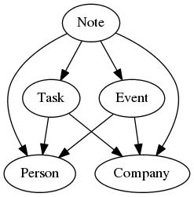

20110713¶
The lino.modlib.cal module is growing¶
What are “automatic tasks”? If a Person has a non-empty unavailable_until field, Lino will create an automatic task “becomes available again” for that Person and the responsible user on that date, with an alarm set 1 month before.
Before the lino.modlib.cal module, Lino knew
only automatic tasks.
Currently there are three models which create “automatic tasks”:
Person, Note and Contract.
(Where Note and Contract mostly inherit the corresponding behaviour from lino.mixins.Reminder)
This is implemented by overriding their save method.
I think I’m going to do the following relationships for the
lino.modlib.cal module:

This leads to the following slave reports:
- Notes : by Company, by Person, by Event
- Tasks : by Company, by Person
- Events : by Company, by Person, by Task
owner field of lino.mixins.Owned now nullable¶
The owner_type and owner_id fields of
a lino.mixins.Owned are now nullable.
This is necessary for lino.modlib.cal.models.Task
and probably doesn’t disturb for other cases
(that is, Upload and Third).
Toggle CheckColumns from a grid¶
It is now again possible to toggle a CheckColumn simply by clicking on it. I’d prefer doubleclick for that, but it seems that a doubleclick never reaches the CheckColuimn component (I guess because it gets consumed by the row).
Displaying GenericForeignKey in a Grid¶
New lino.fields.GenericForeignKeyIdField is used by lino.ui.extjs3
to handle the correct store field type for these fields.
the owner_id field of lino.mixins.Owned is currently the only usecase.
Checkin 20110713